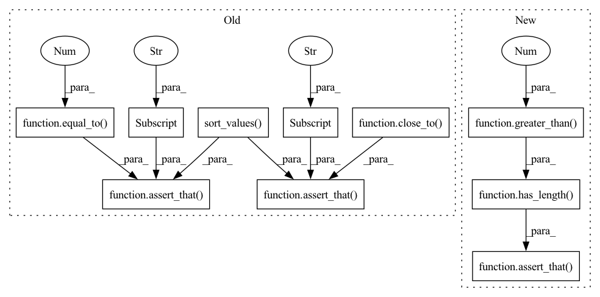

Pattern ID :2664

Before Change
result = check.run(sampled_train, sampled_test,
train_predictions=train_preds, test_predictions=tests_preds,
device=device, n_samples=None)
first_row = result.value.sort_values(by="Number of samples", ascending=False).iloc[0]
// Assert
assert_that(len(set(result.value["Class"])), equal_to(2))
assert_that(len(result.value), equal_to(8))
assert_that(first_row["Value"], close_to(0.991, 0.001))
assert_that(first_row["Number of samples"], equal_to(123))
assert_that(first_row["Class"], equal_to(2))
// copied from class_performance_test but sampled
def test_class_performance_mnist_largest_sampled(mnist_dataset_train, mnist_dataset_test, mock_trained_mnist, device):
After Change
// Assert
assert_that(set(result.value["Class"]), equal_to(set(range(10))))
assert_that(len(result.value), equal_to(40))
assert_that(result.display, has_length(greater_than(0)))
figure = t.cast(BaseFigure, result.display[0])
assert_that(figure, instance_of(BaseFigure))
In pattern: SUPERPATTERN
Frequency: 3
Non-data size: 10
Instances
Fragment ID: 10892263
Project Name: deepchecks/deepchecks
Commit Name: 7cf93ae88c161b880d42700dbaf8c190689b5b22
Time: 2022-06-29
Author: 71635444+yromanyshyn@users.noreply.github.com
File Name: tests/vision/base/test_static_predictions.py
M Class Name: AnonimousClass
N Class Name: AnonimousClass
M Method Name: test_class_performance_mnist_largest_sampled_before(4)
N Method Name: test_class_performance_mnist_largest_sampled_before(4)
M Parent Class:
N Parent Class:
M File Name: tests/vision/base/test_static_predictions.py
N File Name: tests/vision/base/test_static_predictions.py
M Start Line: 68
M End Line: 77
N Start Line: 101
N End Line: 139
'>
Before Change
result = check.run(mnist_dataset_train, mnist_dataset_test,
train_predictions=train_preds, test_predictions=tests_preds,
device=device)
first_row = result.value.sort_values(by="Number of samples", ascending=False).iloc[0]
// Assert
assert_that(len(set(result.value["Class"])), equal_to(2))
assert_that(len(result.value), equal_to(8))
assert_that(first_row["Value"], close_to(0.987, 0.001))
assert_that(first_row["Number of samples"], equal_to(1138))
assert_that(first_row["Class"], equal_to(1))
// copied from image_segment_performance_test
def test_image_segment_performance_coco_and_condition(coco_train_visiondata, mock_trained_yolov5_object_detection, device):
After Change
// Assert
assert_that(set(result.value["Class"]), equal_to(set(range(10))))
assert_that(len(result.value), equal_to(40))
assert_that(result.display, has_length(greater_than(0)))
figure = t.cast(BaseFigure, result.display[0])
assert_that(figure, instance_of(BaseFigure))
'>
Fragment ID: 10892264
Project Name: deepchecks/deepchecks
Commit Name: 7cf93ae88c161b880d42700dbaf8c190689b5b22
Time: 2022-06-29
Author: 71635444+yromanyshyn@users.noreply.github.com
File Name: tests/vision/base/test_static_predictions.py
M Class Name: AnonimousClass
N Class Name: AnonimousClass
M Method Name: test_class_performance_mnist_largest_sampled(4)
N Method Name: test_class_performance_mnist_largest_sampled(4)
M Parent Class:
N Parent Class:
M File Name: tests/vision/base/test_static_predictions.py
N File Name: tests/vision/base/test_static_predictions.py
M Start Line: 87
M End Line: 96
N Start Line: 149
N End Line: 186
'>
Before Change
result = check.run(mnist_dataset_train, mnist_dataset_test,
train_predictions=train_preds, test_predictions=tests_preds,
device=device, n_samples=None)
first_row = result.value.sort_values(by="Number of samples", ascending=False).iloc[0]
// Assert
assert_that(len(set(result.value["Class"])), equal_to(2))
assert_that(len(result.value), equal_to(8))
assert_that(first_row["Value"], close_to(0.977, 0.001))
assert_that(first_row["Number of samples"], equal_to(6742))
assert_that(first_row["Class"], equal_to(1))
// copied from class_performance_test but added a sample before
def test_class_performance_mnist_largest_sampled_before(mnist_dataset_train, mnist_dataset_test, mock_trained_mnist, device):
After Change
// Assert
assert_that(set(result.value["Class"]), equal_to(set(range(10))))
assert_that(len(result.value), equal_to(40))
assert_that(result.display, has_length(greater_than(0)))
figure = t.cast(BaseFigure, result.display[0])
assert_that(figure, instance_of(BaseFigure))
'>
Fragment ID: 10892265
Project Name: deepchecks/deepchecks
Commit Name: 7cf93ae88c161b880d42700dbaf8c190689b5b22
Time: 2022-06-29
Author: 71635444+yromanyshyn@users.noreply.github.com
File Name: tests/vision/base/test_static_predictions.py
M Class Name: AnonimousClass
N Class Name: AnonimousClass
M Method Name: test_class_performance_mnist_largest(4)
N Method Name: test_class_performance_mnist_largest(4)
M Parent Class:
N Parent Class:
M File Name: tests/vision/base/test_static_predictions.py
N File Name: tests/vision/base/test_static_predictions.py
M Start Line: 47
M End Line: 56
N Start Line: 52
N End Line: 89